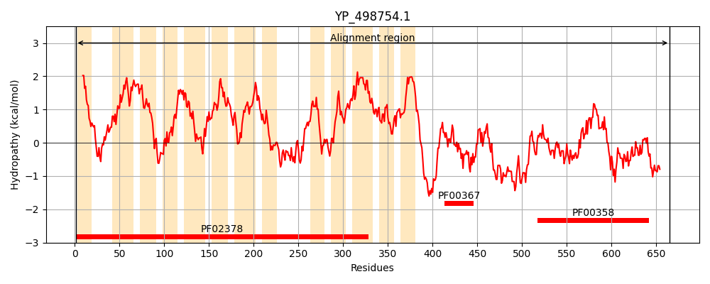
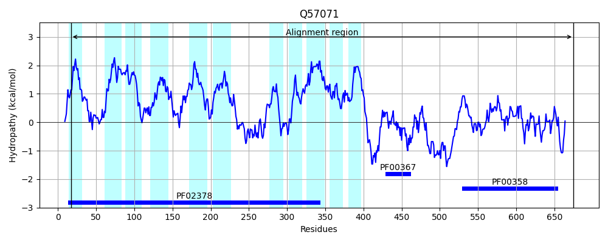
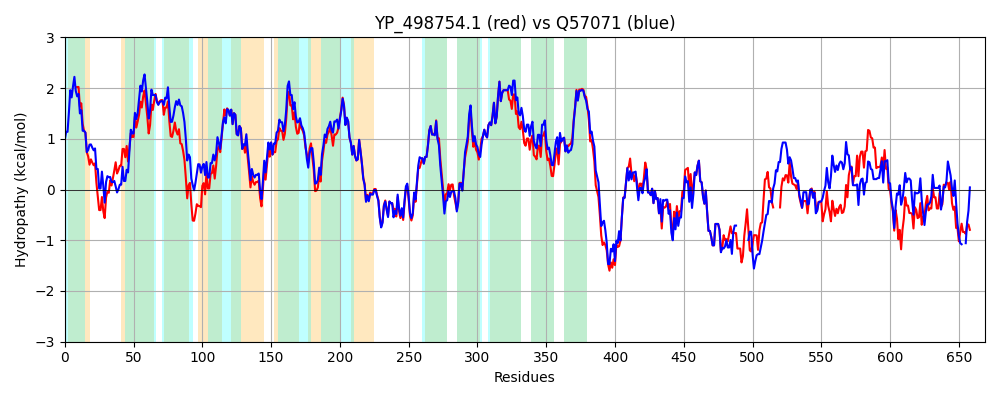

Hit Accession: Q57071
Hit TCID: 4.A.1.1.13
Hit Description: gnl|BL_ORD_ID|14171 gnl|TC-DB|Q57071|4.A.1.1.13 PTS system glucose-specific EIICBA component OS=Staphylococcus carnosus (strain TM300) GN=ptsG PE=1 SV=1
Mach Len: 669
e:0.000000
Query TMS Count : 13
Hit TMS Count: 11
TMS-Overlap Score: 10.350000
Predicted Substrates:CHEBI:5418;glucose
BLAST Alignment:
Score: 2568 , Bit scores: 993 bits, E-value: 0.0e+00, Alignment length: 669, Percentage identity: 75
Query: 1 MLPVAILPAAGLLLAIGTAMQGESLQHYLPFIQNGGVQTVAKLMTGAGGIIFDNLPMIFALGVAIGLAGGDGVAAIAAFVGYIIMNKTMGDFLQVTPKNIGDPASGYASILGIPTLQTGVFGGIIIGALAAWCYNKFYNINLPSYLGFFAGKRFVPIMMATTSFILAFPMALIWPTIQSGLNAFSTGLLDSNTGVAVFLFGFIKRLLIPFGLHHIFHAPFWFEFGSWKNAAGEIIHGDQRIFIEQIREGAHLTAGKFMQGEFPVMMFGLPAAALAIYHTAKPENKKVVAGLMGSAALTSFLTGITEPLEFSFLFVAPLLFFIHAVLDGLSFLTLYLLDLHLGYTFSGGFIDYFLLGILPNKTQWWLVIPVGLVYAVIYYFVFRFLIVKLKYKTPGREDKQSQAATASATELPYAVLEAMGGKANIKHLDACITRLRVEVNDKSKVDVPGLKDLGASGVLEVGNNMQAIFGPKSDQIKHEMQQIMNGQVVENPTTMEDDKDETVVVAEDKSATSELS----HIVHAPLTGEVTPLSEVPDQVFSEKMMGDGIAIKPSQGEVRAPFNGKVQMIFPTKHAIGLVSDSGLELLIHIGLDTVKLNGEGFTLHVEEGQEVKQGDLLINFDLDYIRNHAKSDITPIIVTQGNITNLDFKQGEHGNISFGDQLFEAK 665
MLPVAILPAAGLLLA+G A QG++LQ +PFI+ G Q VAK+M GAGGIIFDNL +IFALGVAIGLA GDGVAAIAAFVG+I++NKTMG FL VTP+ D A+G+A++LGIPTLQTGVFGGIIIGALAAWCYNKFYNI+LPSYLGFFAGKRFVPIMMAT SFILAFPMA+IWP+IQ GLNAFS GLL SNTG+AVFLFGFIKRLLIPFGLHHIFHAPFWFEFGS+KNAAG+IIHGDQRIFIEQIR+ LTAGKFMQGEFPVMMFGLPAAALAIY TAK ENKKVVAGLM S ALTSFLTGITEPLEFSFLFVAPLLFFIHAVLDGLSFL LYLLDLHLGYTFSGGFID+FLLGILPNKTQWWLVIPVGLVYA IYY +FRFLIVK +KTPGREDK+ +++ +A+ELP+ VL+AMGGKANIKHLDACITRLRVEVNDK+KVDV LKDLGASGVLEVGNNMQAIFGPKSDQIKH+MQQIM+G++ +ET V E T+E++ +V+AP+ GEV +SEVPD+VFSEKMMGDGIAIKP GEV APF+G V+M+FPTKHAIGL S G+ELLIH GL+TVKL G+GF + V+E + G L+ DLDYI+ HA S ITPI+VT N ++ Q HG + GD++ K
Sbjct: 17 MLPVAILPAAGLLLALGNAFQGDALQSLMPFIKAEGFQNVAKMMEGAGGIIFDNLAIIFALGVAIGLASGDGVAAIAAFVGFIVLNKTMGMFLGVTPEKAADAATGFANVLGIPTLQTGVFGGIIIGALAAWCYNKFYNISLPSYLGFFAGKRFVPIMMATCSFILAFPMAIIWPSIQGGLNAFSEGLLASNTGLAVFLFGFIKRLLIPFGLHHIFHAPFWFEFGSYKNAAGQIIHGDQRIFIEQIRDNVPLTAGKFMQGEFPVMMFGLPAAALAIYQTAKKENKKVVAGLMLSGALTSFLTGITEPLEFSFLFVAPLLFFIHAVLDGLSFLILYLLDLHLGYTFSGGFIDFFLLGILPNKTQWWLVIPVGLVYAAIYYIIFRFLIVKFNFKTPGREDKEVKSSNVAASELPFKVLDAMGGKANIKHLDACITRLRVEVNDKAKVDVQELKDLGASGVLEVGNNMQAIFGPKSDQIKHDMQQIMDGKIT--------SPEETTVTEEGDKETAEIAAAGGGVVYAPIKGEVVDISEVPDKVFSEKMMGDGIAIKPETGEVVAPFDGVVKMVFPTKHAIGLESKDGIELLIHFGLETVKLEGKGFDILVKENDNIVLGQPLMKVDLDYIKEHADSTITPIVVTNLNGRTMEVLQ--HGEVKQGDKVILVK 675 | Protein Hydropathy Plots: |
|---|
|  |  |
Pairwise Alignment-Hydropathy Plot:
|
|---|
|  |